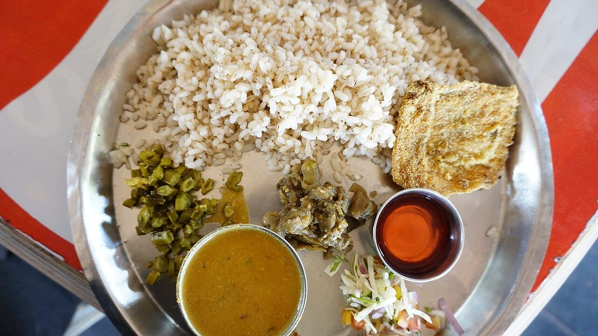

Prep20 min
Cook25 min
Total45 min
Serves4
Difficultyeasy
Contains: fish
Ingredients
Quantities for 4.
- 600g, cut into 3cm steaks — kingfish, pomfret or mackerel Fishon the bone tastes better than fillet
- 1 cup fresh grated Coconutfrozen grated coconut, thawed, works
- 8 dried, stemmed Kashmiri Chillifor colour without ferocity
- 1 tbsp Coriander Powder
- 1 tsp Cumin Seeds
- 3/4 tsp Turmeric
- 1/2 tsp Black Pepperoptional
- 6 cloves Garlic
- 2cm piece Ginger
- walnut-sized ball, soaked in 1/2 cup hot water Tamarind
- 4 petals Kokumthe sourness Goan cooks actually reach foroptional
- 1 medium, finely sliced Onion
- 3, slit lengthways Green Chilli
- 6 small, topped and halved Okraa common addition, adds bodyoptional
- 2 tbsp Coconut Oilor any neutral oil
- to taste Salt
- 500ml Water
Equipment
stovetop, blender
Before you start
- Rub the fish with 1/4 tsp turmeric and a big pinch of salt and leave it 20 minutes in the fridge — it firms the flesh so it does not shred in the pot.
- Soak the tamarind in hot water while you grind, then squeeze and strain out the fibre.
- Grind the masala first and have it waiting. Once the curry is on, the whole thing takes 15 minutes.
Method
- Grind the coconut, Kashmiri chillies, coriander powder, cumin, turmeric, pepper, garlic and ginger to a very smooth paste with about 150ml water.Grind longer than feels necessary — three or four minutes. Grainy coconut makes a curry that never looks silky.
- Heat the coconut oil in a wide pan and soften the sliced onion over medium heat for 5 minutes, until translucent, not browned.Brown onion pushes this curry towards a Xacuti. You want it pale and sweet.
- Pour in the ground masala and cook 4 minutes, stirring, until it darkens a shade and smells toasted rather than raw.
- Add the remaining water, the tamarind extract, kokum, green chillies and salt. Bring to a gentle simmer.
- Simmer uncovered 8 minutes, until the surface carries a thin rim of orange oil.
- Slide in the okra, if using, and cook 3 minutes until just tender.
- Lower the fish in a single layer. Do not stir — shake the pan instead.A spoon breaks the steaks apart. Tilt and swirl the pan to move things around.
- Cook 6-7 minutes, until the flesh turns opaque and pulls from the bone when nudged.
- Take it off the heat and leave it 10 minutes before serving with par-boiled rice.The resting is not optional — the curry thickens and the fish takes up the sourness.
Storage
Better on the second day. Keeps 2 days refrigerated in a non-metal container; reheat gently without boiling or the fish falls apart.
Nutrition Medium estimate
| Per serving391 g | Per 100 g | |
|---|---|---|
| Calories | 384 kcal | 98 kcal |
| Protein | 35.7 g | 9.1 g |
| Carbohydrate | 24.2 g | 6.2 g |
| of which sugars | 7.1 g | 1.8 g |
| Fibre | 8.5 g | 2.2 g |
| Fat | 17.4 g | 4.4 g |
| of which saturated | 12.2 g | 3.1 g |
| of which unsaturated | 3.3 g | 0.9 g |
Worked out from the listed quantities. Some of the ingredient list is given to taste rather than by weight, so treat these as a guide. Some ingredients have no exact match in the nutrient database and use the nearest equivalent: kokum. Estimated from raw ingredients using USDA FoodData Central. Cooking changes are not modelled, and added salt is excluded, so sodium is not given.
Recipe v1.0.0, last updated 2026-07-31. Curated for Khaana and kept under version control.